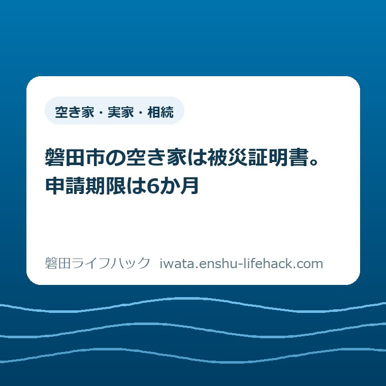

空き家・実家・相続
磐田市の空き家は被災証明書。申請期限は6か月

この記事の要点
Q. 台風や地震で、離れて暮らす実家が壊れました。何から始めればいいですか？
A. 日常的に人が住んでいない空き家は、磐田市では被災証明書の対象です。申請は災害発生日から6か月以内。安全を確保した上で、修理や片付けより先に建物全景と被害箇所を撮り、資産税課へ申請方法を確認してください。売却・解体の結論はその後でも構いません。
導入——空き家は「住まい」でも、証明では住家ではない
磐田市で日常的に人が住んでいない空き家が地震や風水害等で被害を受けた場合、申請するのは罹災証明書ではなく被災証明書です。磐田市は2026年7月30日に更新した案内で、「空き家は住家ではありません」と明記しています。申請期限は災害発生日から6か月以内です。
ここは、言葉の印象と手続きがずれます。離れて暮らす家族にとって実家は、親が暮らし、家族が集まった「住まい」です。しかし、証明書の区分は思い出ではなく、災害時の使用実態で決まります。人が日常的に生活していない空き家は住家以外として扱われます。
防災の日の2026年9月1日に、この違いを取り上げる理由があります。災害の直後、持ち主の方は屋根をふさぐ、濡れた家財を出す、近所へ連絡する、と次々に動きます。その動き自体は正しい。ただし、直す前の写真がなければ、後から被害を説明しにくくなります。
言い切ります。最初の仕事は、売るか直すかを決めることではありません。安全を確保し、被害を写真に残し、6か月という期限をカレンダーへ書くことです。家の将来はまだ決めなくてよい。証明できる材料だけは、今日失わないでください。
この記事は、磐田市の一般的な被災後手続きを繰り返すものではありません。離れて暮らす実家が空き家になっていて、現地へすぐ行けない家族が、誰に何を頼み、何を後回しにできるかに絞ります。制度の全体像は災害にあった後の手続きガイドで確認できます。

磐田市の公式案内で、罹災証明書と被災証明書を分ける
磐田市の「『罹災証明書』『被災証明書』の申請」は、地震・風水害等による被害の証明を二つに分けています。2026年9月1日にページと申請書、撮影方法を確認しました。火災はこの手続きの対象外で、消防本部へ問い合わせる扱いです。
罹災証明書は、住家の被害程度を証明します。住家とは、現実に居住のため使用している建物です。市の職員による被害認定調査が行われ、全壊、大規模半壊、中規模半壊、半壊、準半壊、準半壊に至らない、という区分で判定されます。
被災証明書は、住家以外の建造物や工作物、自動車などが被災した事実を証明します。磐田市が例に挙げているのは、物置、カーポートなどです。そして空き家も住家ではないと明記されています。被害程度の判定は行われません。
この違いは、証明書の名前だけではありません。「どれほど壊れたか」を市が判定するのか、「被災した事実」を証明するのかが違います。空き家の所有者が罹災証明書を前提に段取りを組むと、最初の書類から行き違います。
意外なのは、登記上の種類や固定資産税の課税だけで決まるのではなく、日常的に生活しているかが分かれ目になることです。親が施設へ移り、家具が残っていても、日常的な生活の本拠でなければ空き家です。反対に、使い方が特殊な家は一律に決めつけられません。
個別条件で区分は変わり得ます。週の半分を過ごす家、改修中の家、住民票だけが残る家など、公式ページだけで判断できない状態もあります。資産税課へ、災害時に誰がどの頻度で使っていたかを具体的に伝えてください。
6か月は、片付けの期限ではなく申請の期限
磐田市の被災証明書は、災害発生日から6か月以内に申請しなければなりません。市は「期限厳守」と明記しています。2026年9月1日に発生した災害なら、6か月後を目安に考えるのではなく、具体的な締切日を資産税課へ確認して記録してください。
半年と聞くと長く感じます。しかし、空き家では時間が消えやすい。近所から連絡を受け、きょうだいの日程を合わせ、現地を確認し、保険会社へ電話し、応急修理の見積もりを取る。その間にも仕事と介護と子育ては続きます。
申請期限は、家を片付け終える期限でも、修理を決める期限でもありません。被災証明書を取ったから売却しなければならないわけでもない。反対に、申請しただけで保険金や見舞金が出るとも限りません。証明と、その後の判断は分けて考えます。
磐田市は、保険金や見舞金の請求に証明書が不要な場合もあるため、申請前に保険会社等へ確認するよう案内しています。書類を取ること自体を目的にせず、使う先へ「被災証明書は必要か」「写真だけでよいか」を先に聞くのが実務的です。
それでも、使うかどうかを検討している間に6か月を過ぎるのは避けたい。必要性がはっきりしない場合は、災害名、発生日、物件所在地、被害箇所を一枚にまとめ、資産税課と保険会社の両方へ同じ日に確認してください。
修理と片付けより先に、写真を残す
被災証明書の紙申請では、被災証明申請書、被害状況が分かる写真、本人確認書類が必要です。磐田市は、被害を受けた住まいの写真について、片付けや修理の前に撮影するよう案内しています。空き家でも「直す前に残す」という順番は同じです。
外観は、できれば建物の四方向から撮ります。被害箇所だけの接写では、どの建物のどの位置かが分かりません。道路や隣地を含む全景、建物全体、被害箇所、壊れた部分の寄り、という順に撮ると、後から家族も状況を追えます。
浸水なら、深さが分かる物差しや壁の跡を一緒に写します。室内は部屋ごとの全景と被害箇所の寄りを残します。写真の撮影日時が記録される設定にし、元データを加工せず保管してください。ファイル名だけでは災害との関係が伝わりません。
屋根や高所を撮るために登る必要はありません。余震、強風、瓦の落下、傾いた塀、切れた電線がある場所へ近づかないことが先です。安全な位置から撮れない被害は、無理をせず、資産税課へ写真を用意できない事情を伝えます。
応急処置が必要なら、処置前と処置後を分けて撮ります。ブルーシートを掛ける前、掛けた後、外した部材、業者の見積書や作業報告。後日、何が災害による損傷で、何が以前からの劣化かを説明するときの材料になります。
空き家には、台風より前から傷んでいた箇所が混ざります。雨漏りの染み、腐食、シロアリ、割れた雨樋をすべて災害被害と断定してはいけません。被害前の写真、管理会社の点検記録、過去の修理明細があれば、災害前後を分けて保存します。

離れて暮らす家族は、現地へ行く人を一人に絞る
遠方の家族が空き家の被害に対応するときは、全員が別々に電話するより、連絡役を一人決めたほうが進みます。物件所在地、所有者名、災害発生日、被害の概要、連絡先を一枚にまとめ、同じ情報を資産税課、保険会社、修理業者へ伝えます。
現地へ行ける家族がいない場合は、まず近隣の安全を確認します。瓦や外壁が道路や隣地へ落ちそうなら、証明書より危険の除去が先です。誰が現地を確認したか、いつ何を見たか、緊急措置を誰に頼んだかを時系列で残してください。
写真を頼む相手には、「壊れた所を撮って」だけでは足りません。建物の四方向、表札や地番を特定できる周辺、被害箇所の遠景と近景、室内の全景を頼みます。危険な場所には入らないことも、同じメッセージに書きます。
所有者本人が高齢、入院中、施設入所中ということもあります。磐田市のページには委任状の様式がありますが、家族なら無条件に代理申請できるとは本文に書かれていません。続柄だけで判断せず、資産税課へ委任状と本人確認書類の要否を聞いてください。
窓口は磐田市 企画部 資産税課です。所在地は磐田市国府台3番地1、本庁舎1階。受付は平日8時30分から17時15分、電話は0538-37-4809です。申請方法は窓口、郵送、専用電子申請フォームの三つがあります。
電子申請が選べるのは、離れて暮らす家族には助かります。ただ、所有者以外が入力する場合の扱いや、添付データの形式は事前に確認したほうが安全です。電話で確認した日、担当部署、回答の要点を家族の共有メモへ残します。
被災後の片付けと、空き家の将来を混ぜない
被災後の片付けは、被災証明書の写真を確保してから始めます。磐田市の粗大ごみ戸別収集は原則1世帯につき月1回で、引っ越しや解体による大量ごみは対象外です。
家財が一度に出る実家は、通常の家庭ごみと同じ段取りでは終わりません。出し方は、磐田市の粗大ごみと実家じまいの違いを整理した記事にまとめています。災害ごみとして別の案内が出る場合もあるため、災害後に市が出す最新情報も確認してください。
片付けを始めると、「この機会に売るか」「解体するか」という話が出ます。急ぐ理由がある家もあります。ただ、証明書の申請、保険会社の確認、応急修理、家の将来は別々の判断です。一度に結論を出そうとすると、写真も書類も抜けます。
相続した家の名義、管理、売却、活用、解体の全体像は、磐田市の空き家・実家じまい・相続した家のガイドで確認できます。固定資産税の納税通知書や所有者の確認は、磐田市の固定資産税の案内を先に見ると整理しやすくなります。
売るか貸すかを考える段階へ進んだら、空き家バンクと空き家おこしプロジェクトの違いを確認してください。被災直後に査定を急ぐ必要はありません。被害の記録と安全確保が済んでからでも、選択肢は比較できます。
評価——良い点と、注文したい点
磐田市の案内の良い点は、空き家を被災証明書の対象として明記したことです。「住家以外」という抽象語だけでは、持ち主の方は自分の実家がどちらか迷います。空き家という具体名が一つ入るだけで、最初の申請書を選びやすくなります。
二つ目の良い点は、窓口、郵送、電子申請の三つを用意していることです。市外や県外に住む家族が、証明書のためだけに平日の磐田市役所へ行かずに済む可能性があります。申請書、委任状、撮影方法も同じページから確認できます。
三つ目の良い点は、保険金や見舞金の請求で証明書が不要な場合もあると書いていることです。行政書類を取れば安心、という思い込みを止めて、実際に書類を求める保険会社等へ先に確認させる案内になっています。
その上で、注文したい点があります。所有者以外の家族が申請するとき、委任状が必要になる境目が本文から分かりません。委任状の様式が置かれていても、配偶者、子、相続人、管理会社で扱いが同じかは読み取れません。
もう一つは、空き家に被害前からの劣化がある場合、どの写真や記録を添えると説明しやすいかが見えにくいことです。被災証明書は被害程度を判定しないとはいえ、古い損傷と災害後の損傷を家族が分けて整理できる例があると助かります。
私は、制度を褒めるためでも責めるためでもなく、遠方の家族が一度で動けるかで見ます。空き家という言葉と6か月の期限が前へ出たのは良い。次は、代理申請の条件を本文に一表で示してほしい。一事業者としての注文はそこです。
対案・結論——今日、災害発生日と写真フォルダを共有する
離れて暮らす実家が被災した家族が今日できる一歩は、共有メモを一つ作ることです。冒頭に災害発生日、物件所在地、所有者、現地確認者、資産税課の電話番号、6か月の申請期限を書きます。結論を出す会議は、まだ要りません。
次に、写真フォルダを作ります。「01全景」「02外周」「03室内」「04被害箇所」「05応急処置」「06書類」と分けます。家族が撮った写真を通信アプリの画面だけに残さず、元の画像データを同じ場所へ集めます。
三つ目に、資産税課へ電話する人と、保険会社へ電話する人を分けます。市には証明書の区分、代理申請、添付書類、締切日を聞きます。保険会社には証明書の要否、必要な写真、修理前の現地確認の要否を聞きます。
四つ目に、危険を止める応急処置だけを依頼します。正式な修理、家財の全撤去、解体は、記録と確認が済んでから判断します。近隣へ危険が及ぶ場合は待てませんが、そのときも処置前後の写真と領収書を残します。
解体後に基礎撤去や造成など土地を掘る工事を予定している場合は、着工前に地番と位置図を用意し、埋蔵文化財の届出が必要かも確認してください。遺跡範囲の確認は電話ではできません。手順は磐田市の埋蔵文化財届出を整理した記事にまとめています。
空き家を持ち続けるか、貸すか、売るか、解体するかは大きな決断です。災害の衝撃が残る日に決めなくてもよい。6か月以内の申請と写真の確保は、どの選択をするにしても無駄になりにくい材料です。
確認する順番
- 人と近隣の安全を確認し、瓦・外壁・塀・電線などの危険があれば立ち入らない。
- 建物の四方向、全景、被害箇所の遠景と近景、室内、浸水深を安全な場所から撮る。
- 災害発生日を確定し、6か月の申請期限を資産税課へ確認して家族のカレンダーへ登録する。
- 空き家の使用実態、所有者、代理申請者、申請方法を資産税課へ伝え、必要書類を確認する。
- 保険会社等へ被災証明書の要否を聞き、必要な応急処置を記録付きで行う。
- 証明と安全確保の後で、片付け、管理、修理、売却、解体を別々に検討する。
家族で残す記録
家族の共有メモには、電話の結果を一行ずつ足します。「2026年9月1日、資産税課へ確認。空き家なので被災証明書。代理申請は委任状を確認中」のように、日付、相手、回答、未確認事項を分けて書きます。
未確認事項を消さないことも大切です。家族が代理申請できるか、保険会社が証明書を求めるか、落雷が原因か、被害前からの劣化か。分からないことを推測で埋めると、次の人が誤った前提で動きます。
領収書、見積書、作業報告書、写真、申請書の控えは、同じ物件名のフォルダへ入れます。紙で受け取った書類は撮影し、原本の保管場所も書きます。離れている家族ほど、誰の手元に何があるかを見える形にしてください。
大石の視点
ここからは、大石浩之（磐田市／不動産業）としての意見です。今回、個別の被災相談として確かに書ける体験記録はありません。体験した出来事のようには書かず、空き家の段取りを扱う実務家として、私はこう考える、という範囲に限ります。
空き家が被災すると、家族は「もう直せない」「売るしかない」と結論へ飛びやすくなります。私は、その日のうちに家の将来を決める必要はないと考えます。災害直後の判断には、時間、費用、被害範囲の情報が足りません。
一方で、何も決めないことと、何もしないことは別です。写真を撮る。災害発生日を書く。資産税課へ電話する。この三つは、売る場合にも、直す場合にも、当面管理する場合にも使える共通の土台です。
私自身が迷うのは、証明書が不要な場合もあるのに、どこまで申請を勧めるべきかです。書類を増やすことが家族の助けになるとは限りません。だから、申請を急げではなく、期限を失う前に必要性を確認してほしい、と案内します。
この記事で大事にしたのは、「まだ決めない自由を残す」ことです。売却や解体を先に勧めません。ただし、先送りで写真と期限まで失うのは違う。決断は待てる。記録は待てません。
磐田市は南北に長く、市内の実家であっても、家族の住む場所からすぐ着けるとは限りません。県外からならなおさらです。現地へ行けない自分を責めるより、近くで安全に撮影できる人と、電話で確認する人を分けてください。
まとめ——決断は後でよい。写真と6か月は今日押さえる
磐田市では、日常的に人が住んでいない空き家は住家ではなく、地震・風水害等（火災を除く）の被害は被災証明書で対応します。被害程度を判定する罹災証明書とは役割が違います。
被災証明書の申請期限は災害発生日から6か月以内です。紙申請では申請書、被害状況が分かる写真、本人確認書類が必要です。窓口、郵送、電子申請から選べますが、代理申請の条件は資産税課へ確認してください。
今日することは、危険を避けて写真を残し、災害発生日と締切日を記録することです。制度は個別条件で変わります。最後は必ず磐田市の公式ページと資産税課で、対象、必要書類、期限を確認してください。
- 日常的に人が住んでいない空き家は、磐田市では被災証明書。罹災証明書の住家には含まれない。
- 申請は災害発生日から6か月以内、期限厳守。片付け・修理より先に被害状況が分かる写真を残す。
- 売却・解体は今日決めなくてよい。資産税課と保険会社へ必要性を確認し、判断材料を先に守る。
よくある質問
磐田市の空き家が台風や地震で壊れた場合、罹災証明書と被災証明書のどちらですか。
日常的に人が住んでいない空き家は、磐田市の案内では住家に含まれません。地震・風水害等（火災を除く）で被害を受けた空き家は、被害程度を判定する罹災証明書ではなく、被災した事実を証明する被災証明書での対応になります。個別の使用実態で判断が変わり得るため、資産税課へ確認してください。
磐田市の被災証明書はいつまでに申請しますか。
災害発生日から6か月以内で、磐田市は期限厳守と案内しています。資産税課窓口、郵送、専用電子申請フォームから申請できます。紙で申請する場合は申請書、被害状況が分かる写真、本人確認書類が必要です。写真を用意できない事情がある場合は、申請を諦めず資産税課へ相談してください。
離れて暮らす家族が、空き家の所有者に代わって申請できますか。
磐田市の公式ページには委任状の様式が掲載されており、代理申請の仕組みはあります。ただし、誰がどの条件で申請できるかはページ本文だけでは確定できません。所有者の本人確認書類や委任状を用意する前に、資産税課（0538-37-4809）へ続柄、所有者の状況、希望する申請方法を伝えて確認してください。
参考にした公式情報
- 「罹災証明書」「被災証明書」の申請／磐田市（2026年9月1日確認・ページ更新日2026年7月30日）
- 被災証明申請書／磐田市（2026年9月1日確認）
- 住まいが被害を受けたとき最初にすること・写真の撮り方／磐田市（2026年9月1日確認）
- 委任状／磐田市（2026年9月1日確認）

最終確認日：2026-09-01 ／ 本記事は公表情報と執筆者の見解を分けて記載しています。証明書の対象、申請者、必要書類、期限、保険会社等での必要性は個別条件で変わります。最新情報は磐田市公式ページと資産税課（0538-37-4809）でご確認ください。火災の証明は消防本部へお問い合わせください。